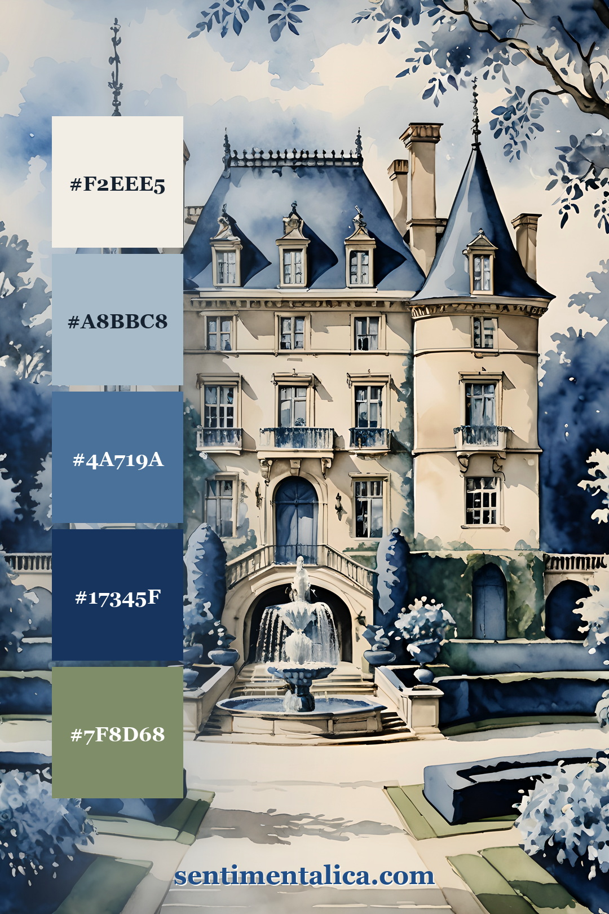
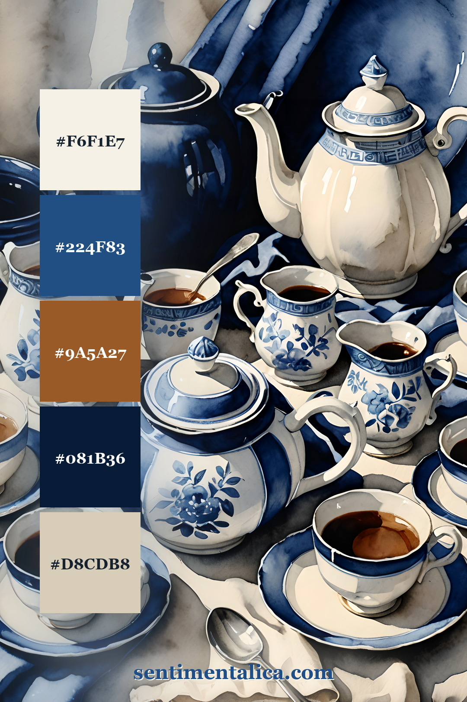
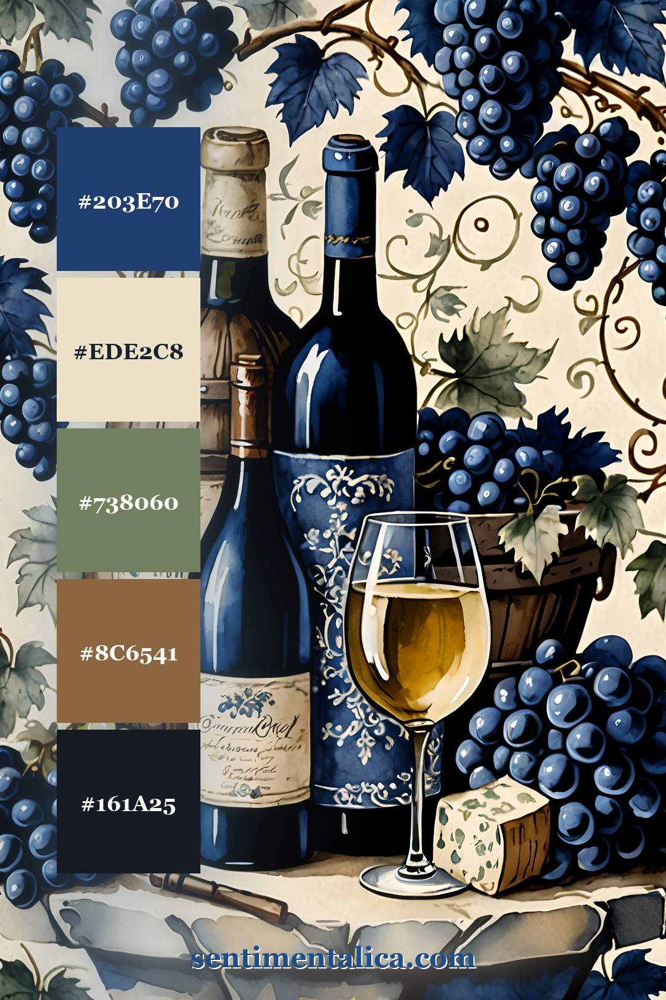
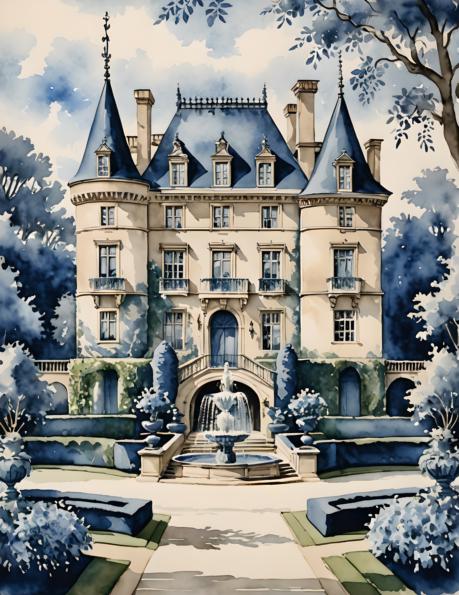
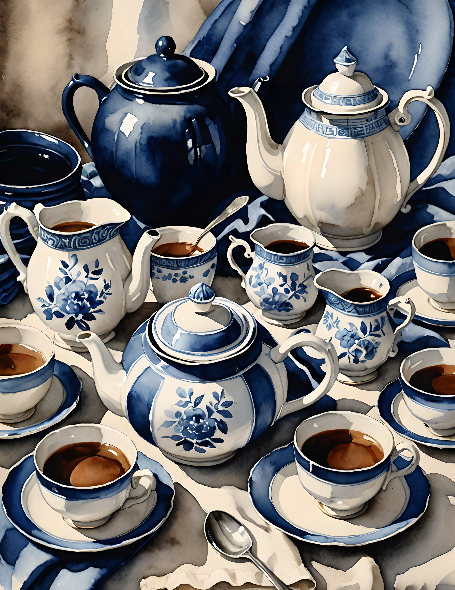
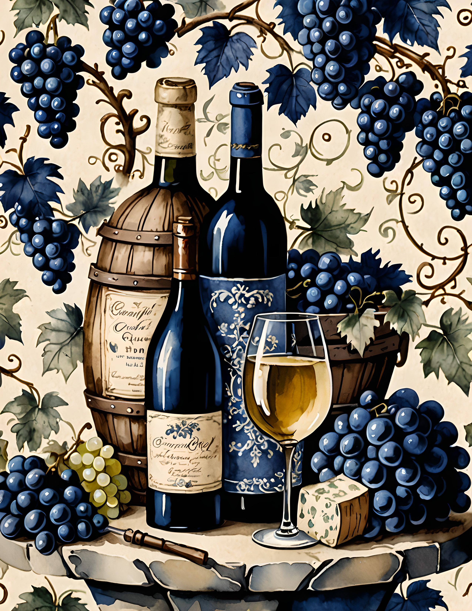

Blue and white is one of the easiest ways to make a junk journal page feel intentional before you add a single ribbon. It gives old paper structure, makes florals feel cleaner, and turns a busy spread into something calm enough to keep looking at.
These three palette ideas are pulled from actual pages in the Toile Blue printable kit. Use them as a starting point when you want a page that feels French, porcelain, garden-worn, and still practical for layering.

Chateau blue
This palette is the most classic version: paper cream, washed blue, roof blue, ink navy, and softened green. It works beautifully for pages with architecture, handwritten labels, botanical scraps, and a single strip of blue ribbon.
Use the darkest blue sparingly. A small postage mark, typed date, or torn frame is enough to make the softer colors feel designed instead of flat.

Porcelain and tea
The tea-service palette is warmer: porcelain cream, deep cobalt, tea brown, shadow navy, and cool paper grey. This is the one to use when a page needs cozy contrast without becoming beige.
Pair it with coffee-dyed paper, a lace edge, a small blue floral, and one practical piece like a receipt or note tab. The blue keeps everything crisp; the brown makes it feel handled.

Grape blue and warm oak
This palette has more depth: navy grape, aged cream, muted sage, oak brown, and near-black blue. It is a good choice when you want the page to feel richer, like an old wine label, a garden menu, or a collected travel note.
If the background is dramatic, keep your writing quiet. One cream label, one dark blue accent, and one warm paper layer can do more than a full spread of embellishments.
A look inside the printable kit
The palettes above come from Toile Blue, a printable junk journal and scrapbook paper kit with blue-and-white French country pages, floral details, porcelain motifs, and vintage-style ephemera surfaces.



If you want the color story without building it from scratch, start with the printable kit and let the pages choose the palette for you. Print one hero page, pull five colors from it, then repeat those colors in your paper layers, labels, and tiny finishing details.
For more color inspiration, browse new journal ideas at sentimentalica.com.